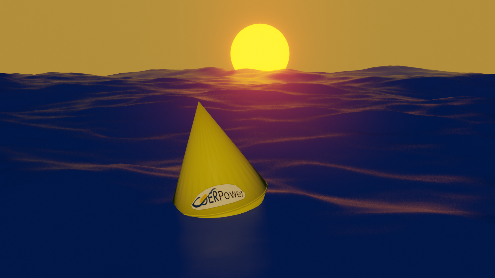

Main
Results
Visualisation
Parameters
About
About coerPower Demonstrator
This software was developed at the
Center for Ocean Renewable Energies (COER)
of
Maynooth University
, Ireland in collaboration with
CorPower AB
, Sweden. It was funded by the
Science Foudnation Ireland (SFI)
and supported by
Marine Renewable Enegeries Ireland (MaREI)
. For questions, suggestions or comments please contact
Simon Thomas
.
